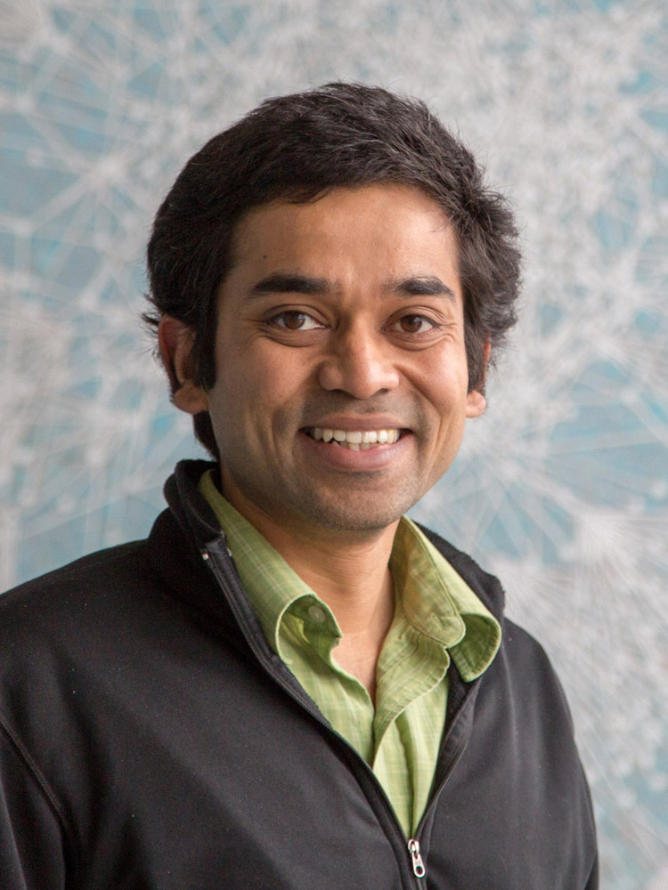
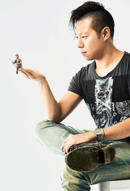
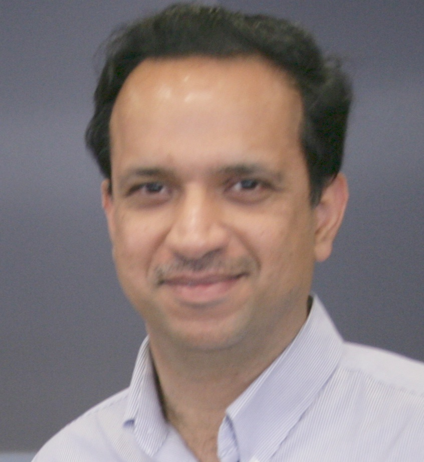
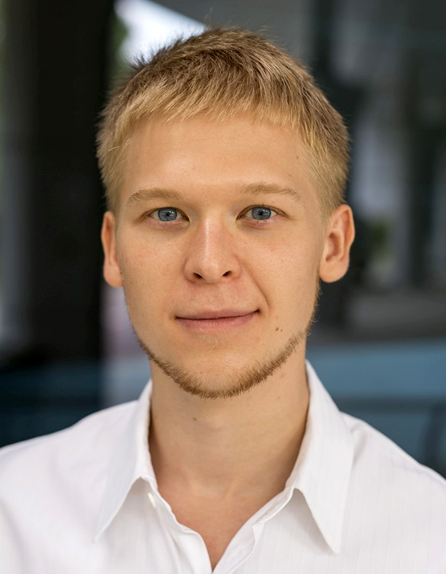
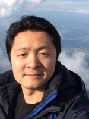

Call for Papers
High-fidelity, interactable 3D content, such as intelligent virtual humans and interactive virtual environments, drives the creation of compelling graphics innovations such as augmented reality (AR) and virtual reality (VR) applications. Creating such interactive, smart virtual content goes beyond the traditional graphics goal of attaining visual realism, giving rise to a new wave of exciting opportunities in computer graphics research. This new research frontier aims to close the loop between 3D scanning and content creation, 3D scene and object understanding, virtual human modeling, physical simulations, 3D printing, and AR/VR applications.
This workshop targets at bringing together computer graphics researchers, as well as experts in AR/VR, computer vision, robotics and artificial intelligence, to discuss the research challenges in creating virtual objects, humans and environments especially for enhancing physical and interactive realism. Specific topics of interests include, but are not limited to:
- Affordance analysis of scenes and objects
- Physically-grounded scene interpretation
- Physics-based design of objects (e.g., for 3D printing)
- Cognitive, perceptual and behavioral modeling of virtual humans
- Virtual human interaction and human perception
- Biomechanics modeling and simulation of human body
- Artificial life and crowd simulations
- Novel applications of AR/VR/haptic devices
Paper Submission:
Allowed submission formats are Full Papers (6-10 pages), Short Papers (2-4 pages), Extended Abstracts (1-2 pages). All submissions must be prepared according to the ACM SIGGRAPH publication guidelines. Each paper will be peer-reviewed by at least two reviewers. Acceptance will be based on relevance to the workshop, novelty, and technical quality. In submitting a Full Paper or Short Paper to this workshop, the authors acknowledge that no paper substantially similar in content has been submitted to another workshop or conference during the review period. All accepted papers and abstracts will be included in the SIGGRAPH Asia proceedings. The proceedings of the workshop will be included in the ACM Digital Library.
We accept:
- Full Papers (6-10 pages)
- Short Papers (2-4 pages)
- Extended Abstracts (1-2 pages)
All Full or Short papers must be original, unpublished work, written and presented in English. All submissions must be prepared according to the ACM SIGGRAPH publication guidelines. At least one author of each accepted Full Paper or Short Paper has to register for SIGGRAPH Asia 2016 (full conference pass) by September 30, 2016, and gives an oral presentation or a poster presentation at the workshop. To recognize the contribution of workshop paper presenters, the presenters can apply for a 25% registration discount per accepted paper submission.
- SIGGRAPH paper formatting guidelines and latex template can be found here.
- Please follow the submission instructions here.
- To create a submission, please use the SIGGRAPH Information System.
Important Dates:
Paper submission deadline: July 5, 2016 (extended deadline: July 15, 2016)
Notification of acceptance: August 1, 2016(extended: Aug 10, 2016)
Camera-ready deadline: August 31, 2016
Conference registration of workshop paper presenters deadline: September 30, 2016
Tentative Schedule:
Our workshop will take place on December 5, 2016, 9am to 6pm, in The Venetian Macao, Macao.
Venue: Sicily 2501B, Level One
| 9:00am - 9:10am | Welcome Speech | Organizers |
| 9:15am - 9:40am | Keynote Talk: Computationally Blurring the Line between Virtual and Real |
 Niloy Mitra University College London |
| 9:45am - 10:10am | Perception of Causal Effects in Virtual and Mixed Reality |
Carol O'Sullivan Trinity College Dublin |
| 10:15am - 10:30am | Morning break | |
| 10:30am - 10:55am | Keynote Talk: Inception, Wide Awake |
Li-Yi Wei University of Hong Kong |
| 11:00am - 11:50am | Spotlight paper presentations | |
| 11:50am - 1:00pm | Oral paper presentations |
|
| 1:00pm - 1:30pm | Poster session | |
| 1:30pm - 2:30pm | Lunch break | |
| 2:30pm - 2:55pm | Keynote Talk: Democratizing Human Digitization |
 Hao Li University of Southern California |
| 3:00pm - 3:25pm | Keynote Talk: Simulating Pedestrian Movement and Interactions for Virtual Reality |
 Dinesh Manocha UNC Chapel Hill |
| 3:30pm - 3:45pm | Mid-afternoon break | |
| 3:45pm - 4:00pm | What about eyeglasses? Beyond one-form-fits-all Virtual Reality |
 Pierre-Yves LAFFONT ETH Zurich |
| 4:05pm - 4:30pm | MagixHome: Augmented & Virtual Reality for Architecture and Interior Design |
 Sai-Kit Yeung Singapore University of Technololgy and Design |
| 4:35pm - 5:05pm | Panel discussion |
Organizers:
Lap-Fai (Craig) Yu, UMass Boston
Yangyan Li, Tel Aviv University
Chenfanfu Jiang, UCLA
Yixin Zhu, UCLA
Tao Gao, MIT
Yibiao Zhao, MIT
Sai-Kit Yeung, SUTD
Program Committee:
Siddhartha Chaudhuri, IIT Bombay
Noah Duncan, University of California, Los Angeles
Theodore Gast, University of California, Los Angeles
Stelian Coros, CMU
JP Lewis,Weta Digital
Sung-Hee Lee, Korea Advanced Institute of Science and Technology
Dingzeyu Li, Columbia University
Liwen Hu, USC
Xiaowei Ding, VoxelCloud
Alexey Stomakhin, Walt Disney Animation Studios
Hao Su, Stanford University
Joseph Teran, University of California, Los Angeles
Nick Wang, National Chiao Tung University
Marcelo Kallmann, UC Merced
Brandon Rothrock, JPL
Full Papers:
- LumiSpace: A VR Architectural Lighting Design System
Yujie Hong, Panagiotis Michalatos - A Virtual Reality Platform for Dynamic Human-Scene Interaction
Jenny Lin, Xingwen Guo, Jingyu Shao, Chenfanfu Jiang, Yixin Zhu, Song-Chun Zhu - Effects of Avatar and Background Representation Forms to Co-Presence in Mixed Reality (MR) Tele-conference Systems
Dongsik Jo, Ki-Hong Kim, Jounghyun Kim - Joint Labelling and Segmentation for 3D Scanned Human Body
Hanqing Wang, Changyang Li, Zikai Gao, Wei Liang - Automatic skeleton generation and skinning of humanoid mesh
Ryan Anthony de Belen, Rowel Atlenza
Extended Abstracts:
- ISSv3: From Human Motion in Real to The Interactive Documentary Film in AR/VR
Sebouh-Steve Bardakjian, Serguei A. Mokhov, Miao Song, Sudhir P. Mudur - ZoeMatrope for realistic and augmented materials
Leo Miyashita, Kota Ishihara, Yoshihiro Watanabe, Masatoshi Ishikawa - See-through Light Field Displays for Augmented Reality
Seungjae Lee, Changwon Jang, Seokil Moon, Byounghyo Lee, Jaebum Cho, Byoungho Lee - The Diffractive Achromat: Full Spectrum Computational Imaging with Diffractive Optics
Yifan Peng, Qiang Fu, Felix Heide, Wolfgang Heidrich - PiGraphs: Learning Interaction Snapshots from Observations
Manolis Savva, Angel X. Chang, Pat Hanrahan, Matthew Fisher, Matthias Nießner - Inferring Forces and Learning Human Utilities From RGBD Videos
Yixin Zhu, Chenfanfu Jiang, Yibiao Zhao, Demetri Terzopoulos, Song-Chun Zhu - Towards VR/AR Enhancement: Interactive Table-type Light Field Display
Chen Su, Yifan Peng, Qing Zhong, Haifeng Li, Rui Wang, Wolfgang Heidrich, Xu Liu - Analyzing Visual Attention via Virtual Environments
Haikun Huang, Ni-Ching Lin, Lorenzo Barrett, Darian Springer, Hsueh-Cheng Wang, Marc Pomplun, Lap-Fai Yu - Aerial Interaction with Femtosecond Laser Induced Plasma
Yoichi Ochiai